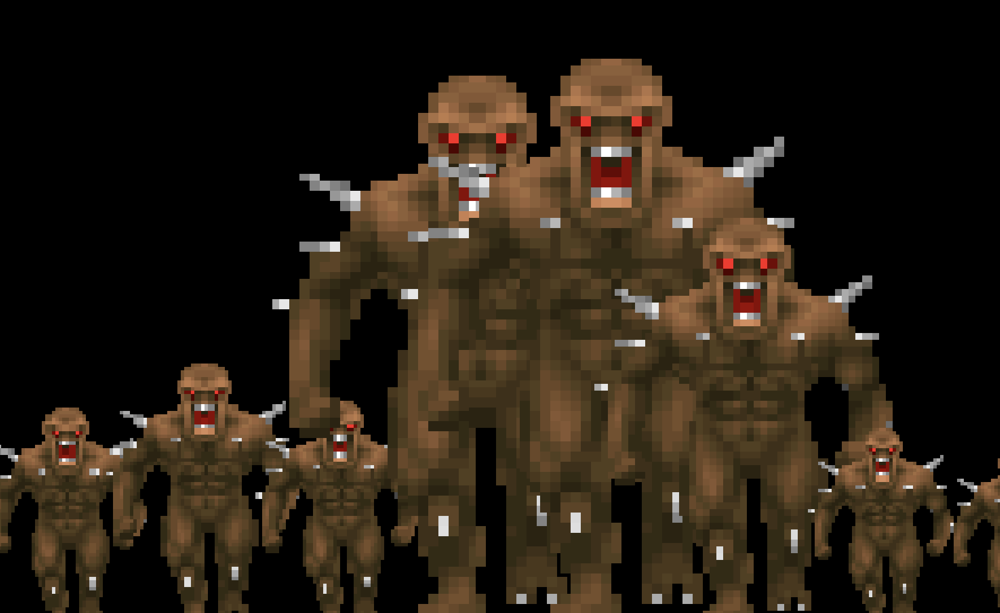

DOOMVIZ
A VST3/AU music visualizer powered by the Doom (1994) renderer


What Is This?
DoomViz is an open-source VST3/AU plugin that embeds the Doom (1994) software renderer and drives it from real-time audio and MIDI input. Load it as an effect in your DAW, route audio through it, and watch E1M1 come alive with your music.
Audio passes through unchanged — DoomViz is purely visual. A floating control window lets you switch scenes without covering the visualizer, so you can put the renderer on a separate display.
Visualizer Scenes

Kill Room
Auto-navigates E1M1 with collision detection. Audio onsets spawn monsters ahead of the player. Player faces and shoots nearby enemies with the shotgun when audio is playing. Sector lighting pulses with RMS level. God mode, infinite ammo.
Sprite Spectrum
2D visualizer using real Doom imp sprites decoded from WAD patch data. 8 frequency bands from sub-bass to air, each rendered as a scaled imp sprite (0.5x–3x based on amplitude).
Analyzer Room
Walks through E1M1 holding the BFG9000 while an 8-band FFT spectrum is injected onto wall textures in real-time. Each band has a distinct color. Movement speed is driven by sub-bass — bass hits make you move, silence keeps you still.
Switch scenes via the floating control window or MIDI Program Change (0, 1, or 2). Each switch fully reloads the map — no state bleeds between scenes.
Signal Flow
Audio Analysis Pipeline
- FFT — 2048-sample Hann window, 16 log-spaced bands (20Hz–20kHz)
- Time-domain RMS — computed from raw samples, not FFT magnitudes
- Envelope follower — per-band with configurable attack/release
- Onset detection — spectral flux transient trigger for monster spawning
- MIDI — note velocity, 128 CC values, program change, MIDI clock for BPM sync
Audio→render thread communication is lock-free via juce::AbstractFifo ring buffer
and atomic MIDI state.
YAML Routing
A YAML config maps analyzed signals to scene parameters with per-channel gain, offset, smoothing, and per-route scale with blend modes (replace, add, multiply, max).
inputs:
kick_env:
source: audio
mode: band_rms
band: [20, 200]
smoothing: 0.05
gain: 2.0
routes:
- from: kick_env
to: sector_light.all
scale: 1.0
Without a config loaded, the plugin auto-wires audio analysis directly to scene parameters.
Doom Engine Extensions
The stripped linuxdoom-1.10 renderer has been ported to 64-bit macOS and extended with:
doom_move_player()— collision-checked movement via P_TryMovedoom_set_camera_angle()— angle-only update (no blockmap relinking)doom_set_wall_texture_data()— inject custom pixel data onto wall texturesdoom_fire_weapon()/doom_give_weapon()— weapon controldoom_set_god_mode()/doom_respawn_player()— invulnerability
Building
Requires macOS with Apple Clang and Flox for dependency management.
git clone --recursive <repo-url>
cd doom_viz && flox activate
mkdir -p build && cd build
cmake .. -DCMAKE_C_COMPILER=/usr/bin/clang \
-DCMAKE_CXX_COMPILER=/usr/bin/clang++
cd ..
flox activate -- cmake --build build -j1 --target DoomViz_VST3
cp -R build/DoomViz_artefacts/VST3/DoomViz.vst3 \
~/Library/Audio/Plug-Ins/VST3/
codesign --force --deep --sign - \
~/Library/Audio/Plug-Ins/VST3/DoomViz.vst3
DOOM1.WAD (shareware) is automatically bundled into the plugin during build.
Tech Stack
- Doom renderer — Stripped linuxdoom-1.10, ported to 64-bit macOS
- Plugin framework — JUCE (VST3, AU, Standalone)
- Config — yaml-cpp
- Rendering — 320×200 indexed framebuffer → RGBA → OpenGL texture (nearest-neighbor)
- Audio transport — Lock-free ring buffer + atomic MIDI state